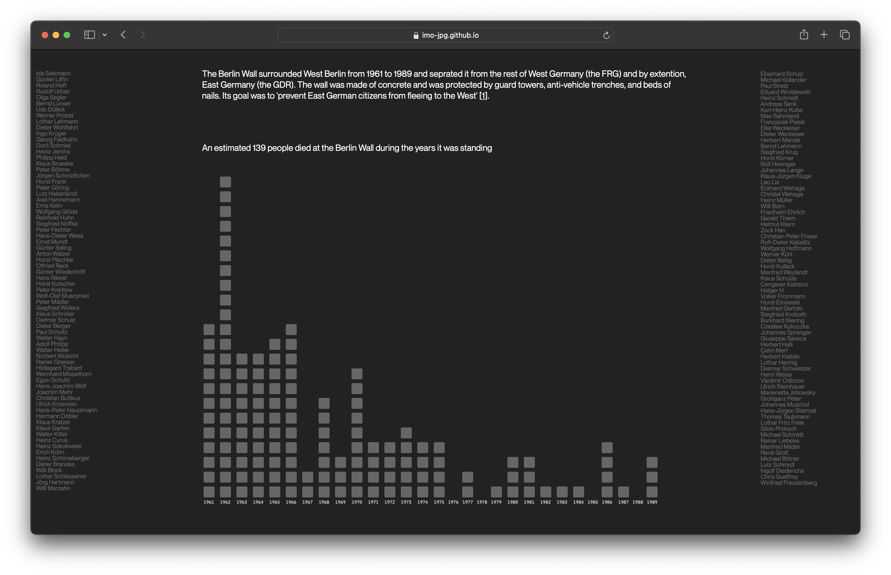
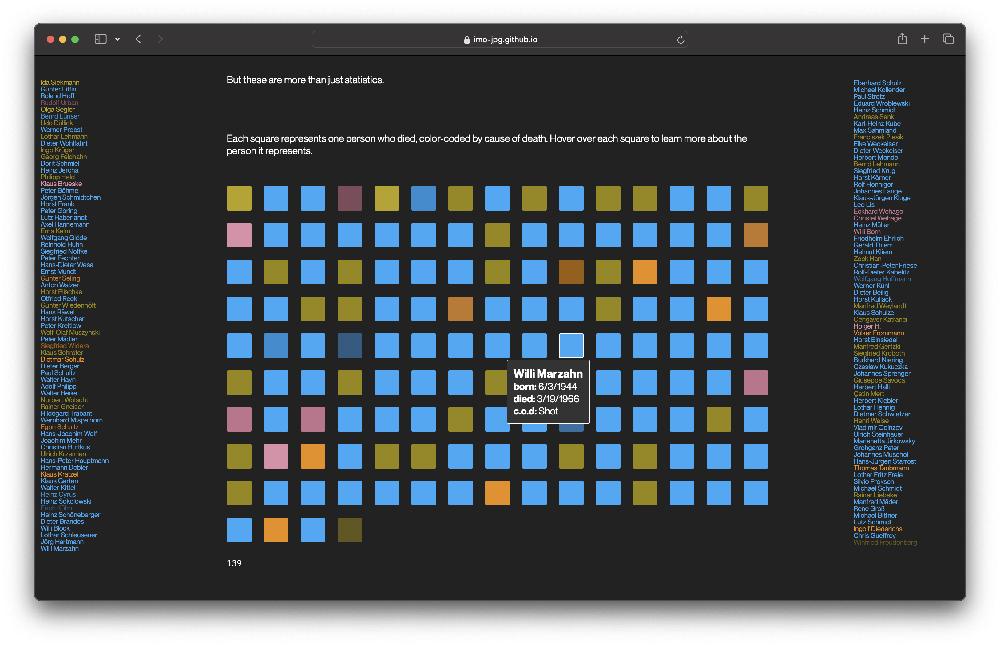
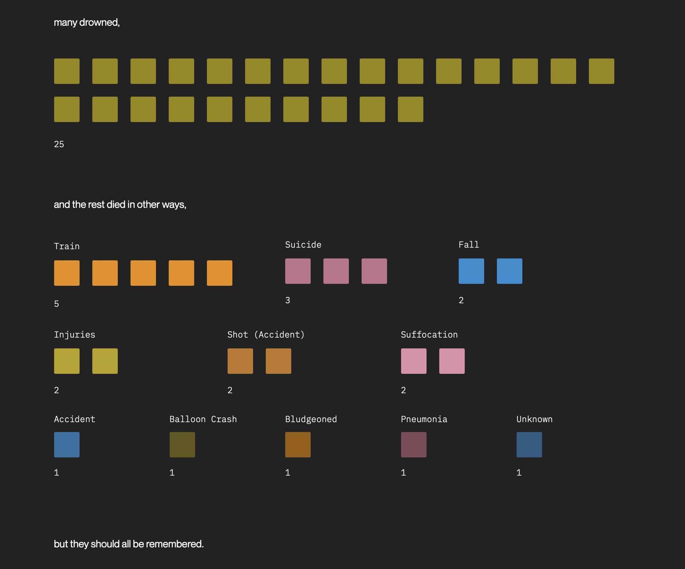
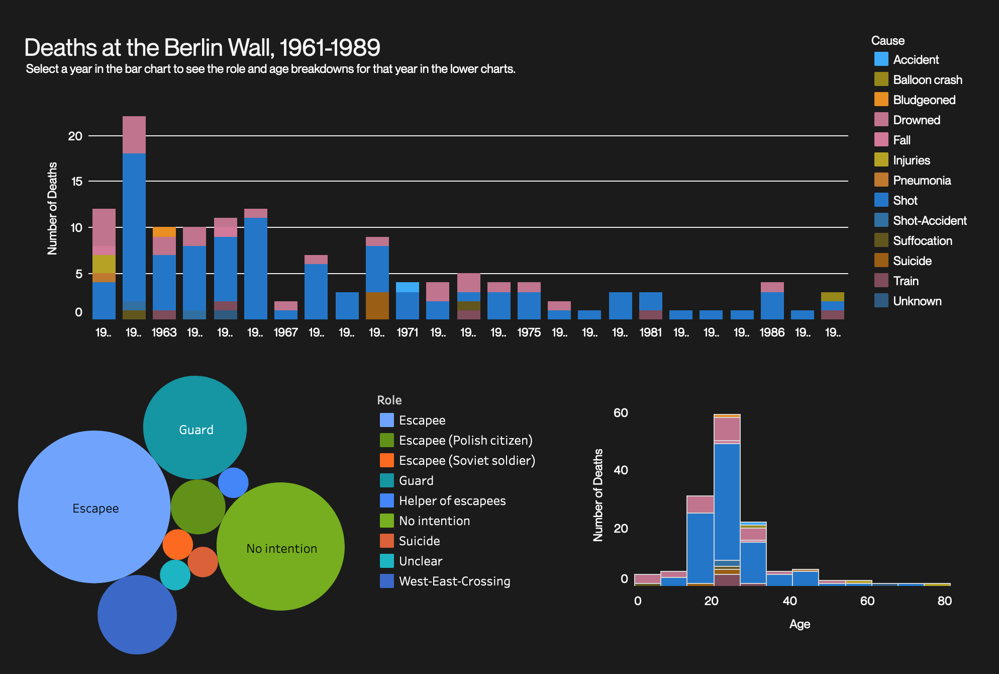
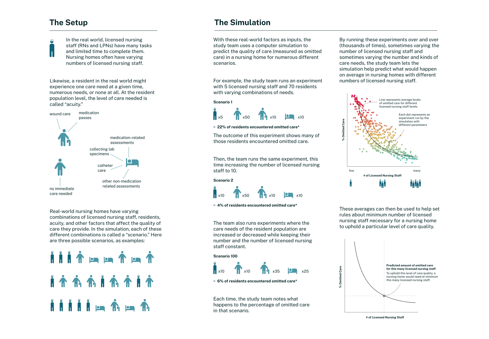
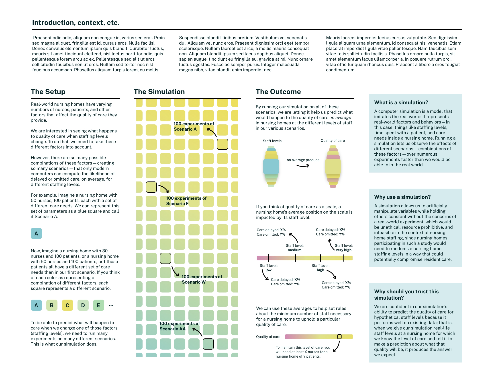
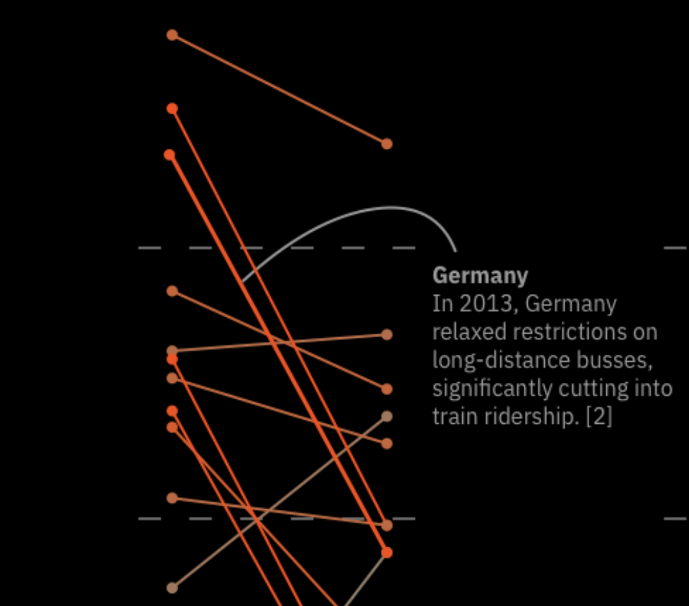
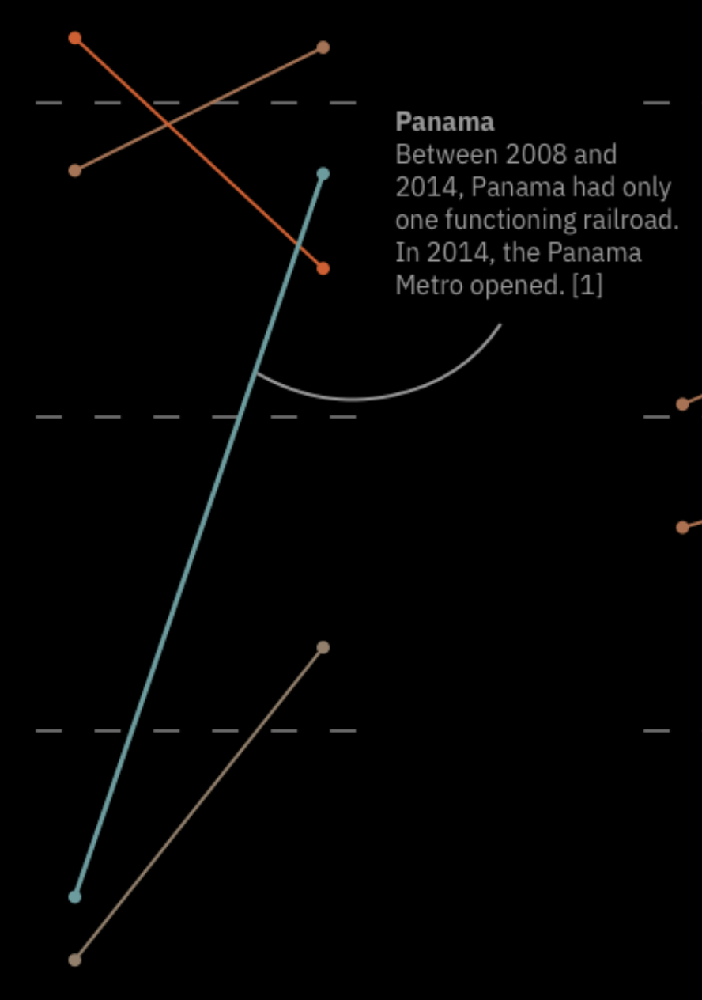

Parsons Infographic Certificate
2021
Berlin Wall Deaths
Data Viz, UX/UI, and coding





A site built with D3 for the final project of Parson's Infographics and Visual Storytelling class taken as a part of their Infographics and Data Visualization Certificate program. The live site can be found here. (It works best on desktop.)
CMS
2023
Simulation Study Infographic
Data Viz, information design


I developed an infographic for a Centers for Medicare and Medicaid Services (CMS) report about the effects of reduced nursing staff numbers on levels of patient care. (The first image is the final version, the second an earlier iteration.)
You can view the infographic in the published report (in section 4).
Personal
2023
Railroad Quality
Data Viz



Inspired by growing up in Germany and being reminded on a 2023 trip to Europe how great the trains are in countries besides the US, I created this viz to explore how (subjective) train quality varies around the world. Best viewed at full size.